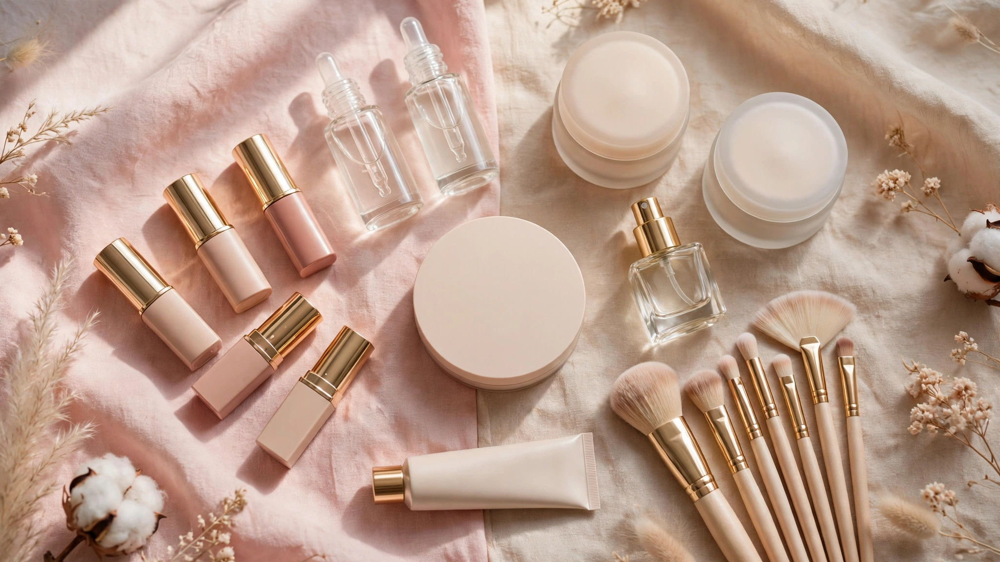

手に取ったときの感じと、使う場面で選ぶ。
コスメ選びラボは、コスメを「触れた感じ」と「使う場面」で選ぶためのサイトです。とろみや伸び、肌にのせたときの質感、香りの立ち方といった、メーカーが公表している質感の説明を集め、朝の支度や夜のケア、持ち歩きといった使う場面と並べて整理します。「使ってみたい」が浮かぶところまでを、一緒に作ります。そのうえで、価格や購入条件は買う前に迷わないよう、公式情報で確認して併記します。運営者が使っていない商品の使用感は書きません。紹介は、メーカー公表の情報に基づいて行います。
公開日：2026年11月9日｜最終更新日：2026年11月9日｜情報確認日：2026年11月9日（下記の数値の確認日）
このサイトはアフィリエイトプログラムを利用する場合があります。広告を含む記事には「PR」と明記します。方針は運営者情報と広告・編集方針をご覧ください。
このサイトでやること
コスメ選びで迷うのは、名前や評判だけでは「触れた感じ」が分からないことです。このサイトでは、次の3つを扱います。
1. 質感から知る
とろみ、伸び、香り、仕上がりの質感について、メーカーが公表している説明を集めて並べます。触れた感じを想像できる形で整理します。
2. 使う場面で比べる
朝の支度、夜のケア、外出先での持ち歩きなど、使う場面ごとに、合う商品を公式情報で比べます。
3. 買う前に確認する
価格・容量・定期購入の条件は、各メーカーの公式サイトと販売元の特定商取引法の表記で確認し、記事に併記します。買う前の最後の確認に使ってください。
効能に触れる場合も、厚生労働省が化粧品で表示できると定めた効能の範囲（56項目）の中だけに限ります。
記事
 検証計算化粧水・乳液の「1mLあたり単価」の出し方 — 本体・詰め替え・大容量を同じ土俵で比べる検証計算：単価＝税込価格÷内容量の定義、容量表記の読み方、無印良品の公式価格で実際に計算した例を示します。
検証計算化粧水・乳液の「1mLあたり単価」の出し方 — 本体・詰め替え・大容量を同じ土俵で比べる検証計算：単価＝税込価格÷内容量の定義、容量表記の読み方、無印良品の公式価格で実際に計算した例を示します。
 条件確認定期購入コスメの総額比較の読み方 — 「初回○円」ではなく最低継続回数までの総額で比べる条件確認：特定商取引法の表記と最終確認画面で、初回価格・2回目以降・最低継続回数・解約条件を読む手順を整理します。
条件確認定期購入コスメの総額比較の読み方 — 「初回○円」ではなく最低継続回数までの総額で比べる条件確認：特定商取引法の表記と最終確認画面で、初回価格・2回目以降・最低継続回数・解約条件を読む手順を整理します。